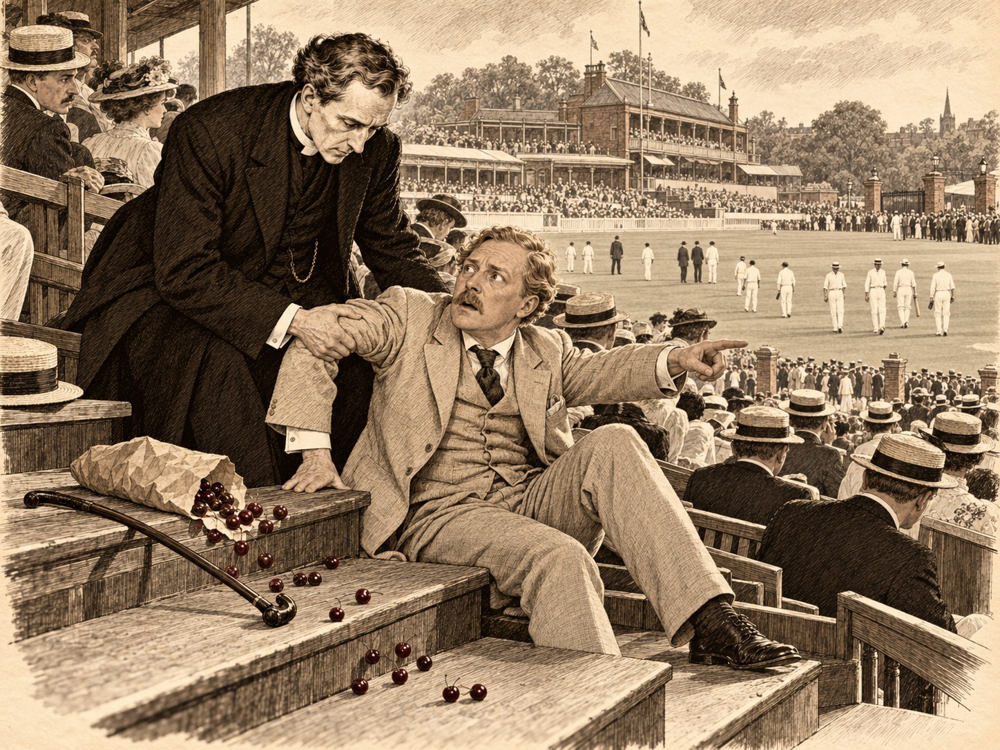

Воскресший взломщик

Лондонцы, которые не играют в крикет, уверены, что его придумали для того, чтобы англичанину было где помолчать в хорошей компании. Лондонцы, которые играют, думают точно так же, но этим гордятся. Преподобный Эмброуз Морс, викарий прихода Сент-Гатлак на краю Фенов — осушенной болотной равнины к востоку от Стамфорда, — не держал в руках биты с тех пор, как покинул Оксфорд, однако молчать в хорошей компании умел и любил. Поэтому в последний вторник августа 1909 года он сидел на открытой скамье стадиона «Лордс» с бумажным кульком вишен на коленях и с тем особым чувством, какое бывает у человека, честно заслужившего своё безделье.
Дела, от которых он отдыхал, были из тех, что утомляют больше пахоты. Сент-Гатлак — приход бедный, а церковная крыша над северным приделом протекала уже третью зиму. Поправить её могли бы деньги Фонда королевы Анны — старинного учреждения, которое ещё при этой королеве взялось прибавлять содержание бедному духовенству и с тех пор занималось этим с неторопливостью, приличной разве что вечности. Викарий провёл всё утро в приёмной, где пахло сургучом и терпением, и вышел оттуда с обещанием, что прошение его будет рассмотрено. Так врачи говорят о больных, которых не надеются вылечить, и викарий решил, что после такого утра ему положены крикет, вишни и, если повезёт, пиво.
Играли Марилебонский крикетный клуб — хозяин «Лордса» и, в сущности, законодатель всей игры — и австралийцы, которые этим летом приехали в Англию и увезли бы с собой её крикетную честь, если бы её можно было уложить в чемодан. Читателю, не посвящённому в тайну, следует знать немного. На зелёном поле стоят две калитки — по три деревянных столбика с перекладинкой наверху. Подающий, который зовётся боулером, старается разбить калитку мячом, а бэтсмен защищает её битой и между делом набирает очки, перебегая от одной калитки к другой. Матч длится три дня, и никто на трибунах не видит в этом ничего странного; странным здесь сочли бы как раз торопливость.
Во вторник отбивали австралийцы, и отбивали так, что англичане на скамьях сначала хмурились, потом вздыхали, а под конец начали хлопать — как хлопают хорошему проповеднику чужого вероисповедания. Викарий хлопал вместе со всеми. Он считал, что радоваться чужой удаче полезно для души, а радоваться чужой удаче на крикетном поле полезно вдвойне, потому что это совсем не стоит денег.
Соседом его по скамье был джентльмен под сорок, светловолосый, с маленькими светлыми усами, которые, казалось, так и не решились стать настоящими усами. Между колен он держал трость и опирался на неё обеими руками, как старик, хотя стариком не был. Правую ногу он вытягивал вперёд не сгибая; викарий, двадцать лет навещавший больных, сразу понял, что это не подагра, а старая рана. Сосед смотрел на поле с жадностью, какой викарий не видел даже у мальчиков, и время от времени говорил вполголоса, ни к кому не обращаясь:
— Не так. Он бы эту подал ниже.
Или:
— Вот это удар. Это — удар.
Викарий предложил ему вишен. Сосед взял две и поблагодарил так рассеянно и вежливо, что было ясно: вежливость в нём живёт сама по себе, как сторожевая собака в пустом доме, а сам хозяин где-то далеко.
Когда объявили перерыв на ленч, трибуны зашевелились. Одни потянулись к Таверне — старому трактиру, который стоит при «Лордсе» с незапамятных времён и, по слухам, видел больше хороших подач, чем любой из ныне живущих судей. Другие разворачивали бумагу со своими бутербродами. Над полем стоял тот ровный летний гул, в котором ни одного слова не разобрать, и викарий как раз раздумывал, не пора ли и ему к Таверне, когда сосед его вдруг поднялся.
Он поднялся не так, как встают хромые, — с опорой, с усилием, — а рывком, точно его дёрнули за ворот. Трость упала. Лицо его, обычно, видимо, мягкое и чуть растерянное, сделалось белым и острым.
— Раффлс! — крикнул он. — Раффлс!
Крикнул он не громко, но так, что ближние соседи обернулись, а дальние нет: в этом крике было больше голоса, чем звука. Потом он шагнул через скамью, забыв о ноге, нога его подвела, и он упал бы лицом на доски, если бы викарий не успел поймать его за локоть. Падали они вдвоём и довольно неуклюже. Кулёк вишен рассыпался, и красные ягоды покатились по ступенькам вниз, к полю, будто тоже спешили кого-то догнать.
— Пустите, — сказал сосед. — Пустите, он уходит.
— Куда? — спросил викарий, не отпуская.
— Там. У ворот, у Таверны. В соломенной шляпе. Он обернулся. Он посмотрел прямо на меня.
Викарий посмотрел туда, куда указывала дрожащая рука. У ворот Таверны стояла толпа в соломенных шляпах — человек, наверное, двести, и каждый второй из них был джентльменом средних лет с бледным лицом. Никто не оборачивался. Никто ни на кого не смотрел. Толпа медленно втягивалась в двери трактира, как вода в воронку, и через минуту у ворот уже не было никого, кроме мальчишки с программками.
— Его там нет, — мягко сказал викарий.
— Был, — ответил сосед. Он сел на скамью, и викарий подал ему трость. Руки у соседа тряслись, но голос стал ровным, почти спокойным, каким бывает голос у человека, который уже давно спорит сам с собой и знает все доводы противника. — Он был там. Я видел его так же ясно, как вас.
Викарий знал, что с людьми в таком состоянии не спорят. Не спорят и с горем, и с лихорадкой, и с молодыми поэтами. Он подобрал с досок несколько уцелевших вишен, пересыпал их соседу в ладонь и сказал:
— Вам нужно пиво. Мне, признаться, тоже. Пойдёмте в Таверну, а если ваш друг окажется там, тем лучше: угостим и его.
Сосед поднял на него глаза — серые, очень светлые, совсем не безумные — и вдруг рассмеялся, коротко и невесело.
— Угостить его, — повторил он. — Да, он бы оценил. Он всегда говорил, что лучше всего чувствуешь себя живым на «Лордсе» в обеденный перерыв. Простите меня, сэр. Я веду себя как дурак.
— Вы ведёте себя как человек, которого что-то напугало, — сказал викарий. — Это не одно и то же, хотя часто бывает похоже.
В Таверне было тесно, шумно и пахло так, как пахнет во всех хороших английских трактирах: пивом, опилками и мокрой шерстью, хотя дождя не было уже неделю. Викарий, чей рост был единственным его земным преимуществом, без труда добыл две пинты и угол стола. Его спутник выпил полкружки одним духом, поставил её и сказал:
— Мандерс. Гарри Мандерс. Вы, верно, слышали это имя, его все слышали, кроме епископов. Хотя и епископы, говорят, читают по ночам.
Викарий имя слышал. Его слышал весь читающий Лондон, и половина читающей провинции, и даже — викарий в этом не сомневался — кое-кто из епископов. Несколько лет назад мистер Мандерс выпустил одну за другой книжки о своём друге, знаменитом крикетисте и светском человеке, которого принимали в лучших домах Англии и который эти дома по ночам грабил. Мистер Мандерс был при нём помощником, наперсником, однажды отсидел за него в тюрьме, а потом стал его летописцем. Книжки были весёлые, иногда грустные и всегда немножко безнравственные. Викарий читал их зимой, у камина, вслух Агнес, и Агнес смеялась, а потом говорила, что если бы такой человек сунулся в их дом, то унёс бы разве что Пами, и то ненадолго. Друга звали А. Дж. Раффлс, и в последней книжке рассказывалось, как он погиб на Бурской войне, в 1900 году, на южноафриканской равнине, которую там зовут вельдом.
— Я помню вас, мистер Мандерс, — сказал викарий. — Моя фамилия Морс, я викарий в Линкольншире. Я читал, как он умер.
— Он умер у меня на глазах, — сказал Банни Мандерс; викарий только теперь вспомнил, что в книжках его так и звали — Банни, кролик, по старому школьному прозвищу. — Я лежал с пулей в бедре, а он лежал рядом и отстреливался, и разговаривал со мной, чтобы я не потерял сознания, и не договорил последней фразы. Я знаю, что он умер. Я знаю это лучше всех на свете. — Он помолчал и допил пиво. — И всё-таки я его видел, мистер Морс.
⁂
Во второй половине дня викарий смотрел уже не столько на австралийцев, сколько на своего соседа, и к вечеру решил, что одного его домой не отпустит. Мистер Мандерс не возражал. Он вообще, как заметил викарий, не умел возражать людям, которые были к нему добры, и, вероятно, всю жизнь из-за этого страдал.
Жил он в Кенсингтоне, в двух комнатах над табачной лавкой, куда вела лестница такой крутизны, что викарий, поднимаясь следом, держал руку наготове, как держат её за ребёнком. Комнаты были бедные, но не неряшливые. Видно было, что хозяин когда-то знал толк в хороших вещах и сохранил от них немногое, зато лучшее: потёртое кожаное кресло, серебряный портсигар на каминной полке и множество книг, стоявших в два ряда. На стене между окнами висела большая фотография в чёрной рамке. На ней было снято одиннадцать молодых людей в белых фланелевых брюках: девять стояли, двое сидели впереди, держа на коленях биты, словно скипетры. Тот, что сидел справа, был темноволос, с густыми кудрями, бледен и смотрел в объектив с такой спокойной насмешкой, будто знал о фотографе что-то, чего фотограф о себе не знал.
— Это он, — сказал Банни, перехватив взгляд викария. — В тот год он играл за Джентльменов против Игроков — у нас так зовут матч любителей против профессионалов. Я вырезал её из крикетного альманаха. У меня нет ни одного его письма, мистер Морс, он никогда не писал писем, это было правило. У меня есть только это.
Он поставил на огонь чайник, потом, подумав, достал из буфета бутылку виски и два стакана, и викарий не стал отказываться: он считал, что от доброго угощения отказываются только святые и невежи, а себя не причислял ни к тем, ни к другим. Банни сел в кожаное кресло и вытянул больную ногу.
— Вы не смеётесь надо мной, — сказал он. — Почему?
— Потому что вы не смешной, — ответил викарий. — Смешон человек, который видит то, чего не может быть, и не знает, что этого не может быть. Вы знаете. Вы знаете это лучше меня. И всё-таки увидели. Это не смешно, мистер Мандерс, это серьёзно.
— Полиция бы посмеялась.
— Полиции за это платят. Мне платят за другое.
Банни посмотрел на него с любопытством.
— За что же?
— За то, чтобы я верил людям, — сказал викарий. — Не всему, что они говорят, а им самим. Это, знаете ли, разные вещи. Почти все люди говорят неправду, но почти никто из них не лжёт целиком. Где-нибудь внутри всегда остаётся правда, как косточка в вишне, и моё дело — её найти, не сломав зубов.
Банни молчал, глядя в огонь. Потом сказал, медленно, как говорят о том, о чём давно не говорили вслух:
— Вы ведь читали мои книжки. Значит, знаете, что он уже один раз умер. Тогда, на пароходе, у берегов Италии. Его окружили, он прыгнул за борт, и все решили, что он утонул. Газеты писали некрологи. Меня взяли и дали полтора года тюрьмы. Я сидел и думал, что он мёртв, и почти радовался, что сижу: так было легче. А когда я вышел, он вернулся. Седой, как старик, хотя ему не было и сорока, притворялся больным, нанял меня сиделкой, — а это был он. Живой. — Банни поднял глаза. — Так что не говорите мне, мистер Морс, что мёртвые не возвращаются. Один уже возвращался.
— Я и не скажу, — ответил викарий. — Я, видите ли, по профессии обязан думать, что один мёртвый вернулся навсегда. Это было бы странно — проповедовать это по воскресеньям, а по вторникам смеяться над теми, кто ждёт.
— Это не одно и то же.
— Конечно, не одно. Но и не так далеко друг от друга, как думают люди, которые не ждали никого.
Он отпил виски и некоторое время смотрел на фотографию.
— Видите ли, — сказал он наконец, — я думаю, горе — это любовь, которой некуда деться. Человек умер, а любовь осталась, и ей нужно куда-то идти, на кого-то смотреть. Она ходит по улицам и заглядывает в лица. Ничего удивительного, что однажды ей покажется знакомое лицо. Удивительно было бы, если бы не показалось.
— Значит, мне всё-таки померещилось.
— Я этого не говорил. Я сказал, что вы видели человека. Какого человека — это другой вопрос, и, может быть, мы когда-нибудь его разрешим. Но человека вы видели, а не туман. Туман не оборачивается.
Банни вдруг рассмеялся — на этот раз почти весело.
— Вы первый, кто мне это говорит. Скейлз сказал бы, что это прекрасная глава для новой книжки.
— Кто такой Скейлз?
Лицо Банни снова потемнело. Он объяснил, что мистер Мортимер Скейлз — издатель, у которого контора на Патерностер-Роу, и что этой весной он купил у Банни новые записки — то, что не вошло в прежние книжки: мелкие дела, неудачи, случаи, о которых Банни раньше не решался писать.
— Видите ли, в книжках я всегда меняю имена, — сказал он. — Всех, у кого мы что-нибудь брали. Это было условие Раффлса, и это просто прилично. Но рукопись я пишу с настоящими именами, иначе не могу, я путаюсь. А в печать отдаю переписанную набело, с выдуманными. Скейлз попросил у меня черновик. Сказал, что для архива, что издатель должен знать, за что отвечает перед судом, если кто-нибудь узнает себя и подаст иск. Я отдал. Я всегда всем всё отдаю. А теперь он не хочет его возвращать.
— Где он держит рукопись?
— В несгораемом шкафу у себя дома. — Банни криво усмехнулся. — Знаете, где он живёт? В Олбани. Это такой старинный дом на Пикадилли, где сдают квартиры холостякам, — только джентльменам, и только с согласия попечителей. Раффлс жил там, когда мы с ним познакомились. Так вот, Скейлз снял те самые комнаты. Те самые, мистер Морс. Говорит, читатели любят место преступления, и ему приятно, когда о нём это пишут в газетах. Я был у него один раз и больше не пойду. Он поставил свой несгораемый шкаф туда, где у Раффлса стояло бюро.
— Неприятный человек, — заметил викарий.
— Деловой человек, — ответил Банни, и было видно, что для него это слово гораздо хуже. — Он даже знает, где я бываю. Неделю назад я сказал у него в конторе, что во вторник меня не будет, потому что я иду на «Лордс», на австралийцев. Он засмеялся и сказал, что на этот день я ему не работник, хоть землетрясение, — и все засмеялись, кто там был. Так что сегодня там меня ждали только австралийцы. — Он помолчал. — И он.
Викарий ушёл от него поздно, когда фонари на Кенсингтон-Хай-стрит уже горели тем жёлтым, немного больным светом, каким горят лондонские фонари в конце лета. Он шёл пешком и думал не о Раффлсе, а о Банни, и не столько о том, что Банни видел, сколько о том, как Банни это рассказывал. Викарий всю жизнь слушал, как люди говорят, — с кафедры, на исповеди, которую англиканская церковь не запрещает, хотя и не поощряет, у постели умирающих и в трактире «Плуг», — и знал, что лгущий голос похож на чуть расстроенный инструмент. В голосе Банни не было фальши. Фальшь была где-то в другом месте, викарий это чувствовал, как чувствуют сквозняк в доме, где все окна закрыты. Но где — он сказать не мог.
⁂
Фонд королевы Анны, как и подобает вечности, не торопился, и викарий провёл в Лондоне ещё неделю. Он жил в меблированных комнатах для приезжего духовенства неподалёку от Вестминстерского аббатства, где за завтраком сельские священники из разных епархий обсуждали дождь, десятину и неблагодарность прихожан с одинаковым выражением тихой обиды. Викарий с ними не спорил, ел копчёную селёдку и писал Агнес длинные письма, в которых о Банни Мандерсе было сказано больше, чем о церковной крыше. Агнес отвечала короткими. В последнем она писала, что Томми опять порвал рукав, что Ферокс съел воскресную баранью ногу и раскаивается только тогда, когда на него смотрят, и что у неё есть для мужа новость, но она скажет её не в письме, а когда он вернётся, потому что новости, как и баранью ногу, лучше подавать к столу горячими. Викарий прочитал это место три раза и так и не догадался, о чём речь.
Утром во вторник, седьмого сентября, когда он укладывал вещи, хозяйка принесла ему записку. Её доставил мальчик-посыльный и ждал ответа внизу. Записка была написана неровным почерком, карандашом, на листке, вырванном из записной книжки:
«Скейлз убит этой ночью у себя в Олбани. Газеты уже кричат, что это Раффлс. Полиция у меня с семи утра. Я не знаю, кого ещё просить. Ради Бога. Г. М.»
Викарий надел шляпу, забыл зонтик и через полчаса был на Пикадилли.
Олбани стоит в глубине мощёного двора, отступив от улицы с тем достоинством, с каким старый джентльмен отступает от слишком шумного разговора. У ворот — сторожка привратника, за ней — старый особняк, а за особняком тянется длинная крытая галерея, которую здесь зовут Rope Walk, канатной дорожкой; по обе стороны от неё — лестницы и двери квартир. Здесь живут холостяки, и живут так тихо, что, по слухам, соседи не здороваются друг с другом по сорок лет, а только кивают. В то утро здесь не было тихо. Во дворе стояли двое констеблей, у сторожки толпились газетчики, а привратник, грузный человек с седыми бакенбардами, отвечал всем одно и то же голосом, в котором оскорблённое достоинство боролось с удовольствием.
Викария пропустили, потому что Банни сказал полиции, что ждёт его. Инспектор Скотленд-Ярда, мистер Пирсон, оказался человеком лет пятидесяти, худым, усталым и вежливым той вежливостью, которая бывает у людей, слишком часто видевших, как другие теряют самообладание. Он принял викария в прихожей и коротко объяснил дело.
Мистера Скейлза нашёл утром его камердинер. Издатель лежал у несгораемого шкафа в кабинете с проломленной головой; рядом валялось тяжёлое бронзовое пресс-папье в виде спящего льва. Шкаф был открыт. Бумаги из него были выброшены на пол, и среди них, по словам старшего клерка, которого уже успели вызвать с Патерностер-Роу, не хватало одной: толстой рукописи в синей картонной папке. На ковре, у самой дверцы шкафа, лежал окурок дорогой турецкой сигареты, и на его бумаге ещё можно было прочесть марку: «Салливан».
— Те самые, — сказал инспектор без выражения. — Если верить книжкам мистера Мандерса, других этот господин не курил. Газетчики пронюхали про окурок раньше, чем мы успели его поднять. Не спрашивайте как. Мне кажется, они узнают о преступлении раньше преступника.
— А привратник? — спросил викарий.
— Привратник показывает, что около одиннадцати вечера пришёл джентльмен и спросил мистера Скейлза. Мистер Скейлз с вечера предупредил, что ждёт гостя, поэтому гостя пропустили. Привратник описывает его так: высокий, стройный, тёмные кудри, бледное лицо, вечерний костюм, цилиндр. Молодой. Ушёл примерно через полчаса. Лица привратник толком не разглядел — фонарь у нас, видите ли, горит только для порядка, — но кудри запомнил. Сегодня в восемь утра он уже рассказывал газетчикам, что видел привидение. К вечеру будет уверен, что привидение с ним поздоровалось.
— И всё-таки вы не верите в привидения.
— Я верю в мистера Мандерса, — сказал инспектор Пирсон, и в голосе его не было злости, только усталость. — Вчера днём мистер Мандерс был в конторе Скейлза на Патерностер-Роу и требовал вернуть рукопись. Клерки слышали, как он кричал. Ночью он, по его словам, был дома один. Свидетелей нет. Он сидел в тюрьме, он десять лет водил компанию с самым ловким взломщиком Англии и описал его приёмы в четырёх книжках. Он знал, где стоит шкаф. Он знал, что в шкафу. А теперь он говорит мне, что неделю назад видел своего покойного друга на «Лордсе». Сэр, я двадцать восемь лет служу в полиции. Когда человек заранее рассказывает всему городу, что видел призрак, значит, он хочет, чтобы этот призрак был у нас наготове.
— Мистер Мандерс хромает, — заметил викарий. — Сильно хромает. Привратник сказал бы о хромоте.
— Человек, который годами переодевался то сиделкой, то лакеем, то полицейским, пройдёт двадцать шагов не хромая. Потом, может быть, неделю пролежит. — Инспектор помолчал. — Я его пока не арестую. Мне не нравится арестовывать людей, у которых дрожат руки, это всегда выходит слишком легко. Но и из виду я его не выпущу.
Банни сидел в соседней комнате — не в кабинете, а в маленькой гостиной, где на стенах висели гравюры с видами Оксфорда, — и при виде викария встал так поспешно, что едва не упал второй раз за неделю. Он был серый, небритый и держался за трость, как за поручень на палубе в качку.
— Они думают, это я, — сказал он. — А газеты думают, что это он. Не знаю, что хуже.
Викарий не успел ответить. В прихожей кто-то заговорил — негромко, с сильным шотландским выговором, — и инспектор Пирсон ответил так почтительно, как отвечают только старшим по чину или по возрасту. Через минуту в гостиную вошёл старик: невысокий, плотный, с короткой седой бородой и маленькими глазами, светлыми и острыми, как два гвоздя. Он был в старом пальто, слишком тёплом для сентября, и в котелке, который снял только тогда, когда заметил воротничок викария.
Банни посмотрел на него и сел.
— Маккензи, — сказал он тихо.
— Он самый, мистер Мандерс, — ответил старик. — Бывший инспектор Маккензи. Я теперь на пенсии, развожу в Илинге розы, и они у меня не растут. Утром прочитал в газете, что ваш приятель воскрес, и решил, что не могу пропустить такого случая. Я гонялся за ним десять лет и ни разу не поймал. Было бы обидно не поймать его и после смерти.
Он обернулся к инспектору Пирсону, и тот, к удивлению викария, без единого слова повёл его в кабинет. Викарий пошёл следом; никто его не остановил, потому что сюртук священника и белый воротничок открывают в Англии больше дверей, чем полицейский значок, особенно если тот, кто их носит, высок ростом и держится так, будто имеет право быть везде, где есть горе.
Тело уже унесли. Старый Маккензи постоял у шкафа, потом опустился на колени, кряхтя, как опускаются люди, которые давно разучились молиться и у которых болят суставы. Он долго разглядывал замок через лупу, потом окурок, который констебль держал на листке бумаги, потом снова замок.
— Нет, — сказал он наконец и поднялся. — Это не он.
— Мы и не думали, что это он, сэр, — ответил Пирсон.
— Я знаю, что вы думали, Пирсон. Вы думали, что это мистер Мандерс в чужом парике. Я тоже так подумал бы на вашем месте, лет двадцать назад. Я не про вас. Я про газеты. — Маккензи ткнул пальцем в окурок. — За десять лет я не нашёл после него ни пылинки, ни волоска, ни следа на подоконнике. Ни разу. Он бы скорее оставил на месте свою визитную карточку, чем окурок, — карточку хоть можно было бы счесть шуткой. А окурок — не шутка, а просто мусор. Мусора он после себя не оставлял. — Старик повернулся к замку. — И вот ещё. Замок открыт ключом, внутри ни царапины. А снаружи кто-то поковырял его отвёрткой, уже после, для вида, чтобы было похоже на взлом. Ключ, я полагаю, у покойного на цепочке?
— На цепочке, — подтвердил Пирсон. — Сняли и повесили обратно.
— Вот видите. Он не стал бы ковырять открытый замок, чтобы кому-то что-то показать. Он работал для себя, а не для публики. Публика его не интересовала, его интересовал только крикет. — Маккензи надел котелок. — Тот, кто здесь был, работал для публики. Ищите актёра, Пирсон. А не мертвеца.
⁂
Из Олбани их выпустили к полудню, и викарий повёл Банни через Пикадилли в Грин-парк, потому что, по его убеждению, нет такого горя, которое не стало бы чуть легче на траве. Банни шёл медленно и молчал. Позади них, шагах в тридцати, шёл человек в сером котелке и тоже молчал; инспектор Пирсон держал слово.
Они сели на скамью под платаном. Листья ещё не желтели, но уже были тусклыми и тяжёлыми, как бывают листья в последнюю неделю лета, когда им самим надоело быть зелёными.
— Маккензи сказал правду, — заговорил наконец Банни. — Он никогда ничего не оставлял. Ни окурка, ни волоска. Это было у него вроде религии. — Он помолчал, потом добавил, глядя в сторону: — Окурок я выдумал.
— Выдумали?
— Для книжки. В одной истории мне показалось, что для красоты нужна подробность, — знаете, такая, которую читатель запомнит. Что-нибудь вроде подписи художника в углу картины. И я написал, что на месте одной кражи осталась сигарета «Салливан», надкуренная, будто он не мог отказать себе в удовольствии. Раффлс бы меня убил за это. Он не любил, когда я его приукрашиваю. Говорил, что я делаю из него актёра, а он игрок. — Банни горько усмехнулся. — Сам Конан Дойл, говорят, выдумывает своему сыщику такие мелочи. Я думал, что и мне можно.
Викарий вспомнил весну двухлетней давности и большого усатого человека, который говорил о шерсти и ранах так, как другие говорят о погоде, и подумал, что Дойлу эти мелочи прощают потому, что его сыщик никогда никого не грабил. Но вслух сказал другое:
— Значит, тот, кто был в Олбани, знает Раффлса по вашей книжке.
— Значит.
— Не по жизни, а по книжке. Он не видел его ни на поле, ни в гостиной, ни за работой. Он его прочитал. — Викарий поднял с травы упавший лист и повертел его в пальцах. — Это очень много говорит о человеке, мистер Мандерс. Мы ищем не друга, не врага и не сообщника, а читателя. Хуже того: внимательного читателя.
— Таких тысячи.
— Тысячи, — согласился викарий. — Но не все они знали, что в прошлый вторник вы будете на «Лордсе».
Банни медленно повернулся к нему.
— Вы хотите сказать…
— Я пока ничего не хочу сказать. Я хочу кое-что посмотреть. Мы можем зайти к вам?
В комнатах над табачной лавкой всё было так же, как неделю назад, только виски в бутылке стало меньше, а на столе лежали исписанные листки, видно, начатые и брошенные. Викарий подошёл к стене между окнами и долго смотрел на фотографию — на одиннадцать молодых людей в белом и на того, что сидел справа, с битой на коленях, с тёмными кудрями и насмешкой в глазах.
— Мистер Мандерс, — сказал он, не оборачиваясь, — когда снята эта фотография?
— Лет восемнадцать назад. Может быть, девятнадцать.
— А сколько ему было тогда?
— Немного за тридцать. Он выглядел моложе.
— А тот человек, которого вы видели у ворот Таверны, — сколько ему было лет?
Банни открыл рот и не ответил.
— Вы сказали мне тогда: соломенная шляпа, бледное лицо, тёмные кудри. Он обернулся и посмотрел на вас. Привратник в Олбани говорит то же самое: высокий, бледный, тёмные кудри, молодой. — Викарий обернулся. — А теперь скажите мне, какие волосы были у Раффлса в тот день, когда вы с ним уходили на войну?
Он видел, как это доходит до Банни — медленно, как вода доходит до корней в сухой земле. Банни опустил глаза, потом снова поднял.
— Седые, — сказал он. — Он поседел ещё тогда, в Италии, когда все думали, что он утонул. А на войну выкрасился в рыжий, чтобы его не узнали офицеры. Я сам об этом написал. Я написал, что видел седину у него под кепкой.
— Вы написали. А тот, кто ходил по «Лордсу», не дочитал. Или дочитал, но не поверил, потому что фотография убедительнее слов. — Викарий кивнул на рамку. — Человек, которого вы видели, сошёл не с того света, мистер Мандерс. Он сошёл вот с этой стены. Или с такой же — из крикетного альманаха, который можно купить у любого букиниста на Чаринг-Кросс-роуд. Он не постарел ни на один день, потому что фотографии не стареют. Стареют только люди. Даже мёртвые стареют — в нашей памяти, вместе с нами.
Банни сел в кожаное кресло и закрыл лицо руками. Викарий не стал его утешать. Он знал, что бывают минуты, когда утешение — это всего лишь способ поскорее закончить разговор, а этот разговор заканчивать было ещё нельзя.
— Я ведь хотел, чтобы это был он, — глухо сказал Банни. — Я не заметил. Я видел то, что хотел видеть. Я дурак.
— Вы не дурак, — сказал викарий. — Вы тот, на кого он рассчитывал. Это разные вещи, хотя опять-таки похожие. — Он сел напротив и наклонился вперёд, опершись локтями на колени, как сидел, бывало, у постели больного, когда разговор шёл о главном. — Послушайте меня. Вы сказали тогда, на «Лордсе», что мёртвые иногда возвращаются. Я ответил, что по профессии обязан верить в одного, который вернулся навсегда. Так вот, я в Него верю. И потому знаю, как это бывает, когда мёртвый возвращается по-настоящему. Он приходит не в толпе и не издали. Он приходит к своим — туда, где они заперлись от страха, или на дорогу, где двое идут и разговаривают о Нём, не узнавая Его. Он садится с ними за стол и ломает хлеб. Он ест рыбу, чтобы они видели, что Он не призрак. И Он показывает раны. Фоме, который не верил, Он сказал: вот руки Мои, вот рёбра, — потрогай. Воскресший приходит со своими ранами, мистер Мандерс. Он приходит таким, каким его сделала смерть, а не таким, каким его снял фотограф до того, как с ним что-нибудь случилось.
Банни отнял руки от лица.
— Раффлс, если бы вернулся, — продолжал викарий, — пришёл бы к вам. Седой, с пулей бурского стрелка, хоть с того света, хоть из Италии — но к вам, сюда, по этой вашей ужасной лестнице. Он один раз уже так сделал: вы сами мне рассказывали. Он не стал бы показываться вам издали у ворот трактира и исчезать. Так показываются не друзья. Так показываются фокусники. Кто-то знал, что вы его любите и ждёте. Кто-то знал, что вы будете на «Лордсе» во вторник. И кто-то решил, что, если вы закричите на весь стадион «Раффлс!», то через неделю, когда в Олбани найдут окурок, полиция станет ловить или мертвеца, или вас — а того, кто стоял у ворот, ловить не станет никто. Он очень точно рассчитал, мистер Мандерс. Он рассчитал всё, кроме одного.
— Чего же?
— Он думал, что в воскресение в наше время не верит никто. Что над вашим рассказом посмеются, и всё. Ему не пришло в голову, что кто-нибудь примет ваши слова всерьёз — и именно поэтому увидит, что они неправда.
Банни долго молчал. Потом спросил очень тихо:
— Кто знал, что я буду на «Лордсе»?
— Вы сказали это в конторе Скейлза, — ответил викарий. — При людях. И все засмеялись.
⁂
Патерностер-Роу — узкая улица в тени собора Святого Павла, где с давних пор торгуют книгами. Говорят, в Средние века здесь продавали чётки и молитвенники и улица получила имя от первых слов молитвы Господней — Pater noster, «Отче наш». Теперь здесь продают всё, что можно напечатать, от проповедей до романов о сыщиках, и викарий, свернув сюда на другое утро, подумал, что молитва, давшая улице имя, просит отпустить нам долги наши, а на этой улице долгов не прощали никому.
Он пришёл не один. Накануне вечером он долго разговаривал с инспектором Пирсоном в маленьком кабинете в Скотленд-Ярде, а старый Маккензи сидел в углу, пил чай без сахара и время от времени произносил одно слово: «Резонно». К концу разговора инспектор перестал быть вежливым и стал просто внимательным, что викарий счёл добрым знаком.
Контора мистера Скейлза занимала второй этаж узкого дома. Старший клерк, мистер Доусон, оказался маленьким человеком с чернильным пятном на манжете и с таким лицом, будто он всю жизнь ждал, что его спросят, и наконец дождался. Покойного он, по всей видимости, не любил, но служил ему двадцать лет, и эта служба приучила его говорить о хозяине так, как говорят о погоде: без злости, но и без надежды.
Да, сказал он, мистер Мандерс был здесь неделю назад и говорил, что во вторник пойдёт на «Лордс». Мистер Скейлз тогда пошутил. Кто был при этом? Мистер Доусон закрыл глаза и вспоминал, шевеля губами, как вспоминают счёт. Был он сам, был мальчик-рассыльный, был джентльмен, который ждал мистера Скейлза в приёмной.
— Что за джентльмен? — спросил Пирсон.
Мистер Доусон замялся. У мистера Скейлза, объяснил он, были посетители, которые приходили не по делам издательства. Они проходили прямо в кабинет, оставались там недолго и уходили, не глядя на клерков. Записей об их визитах не велось. Мистер Доусон никогда не спрашивал, зачем они приходят.
— Но вы догадывались, — сказал викарий.
Мистер Доусон посмотрел на его воротничок, потом на свои манжеты и тихо сказал:
— Я двадцать лет служу в издательстве, сэр. Я знаю, как люди платят за книги, которые хотят купить. А эти господа платили, как платят за книги, которые хотят, чтобы не вышли.
Их было трое за последний год. Один — пожилой баронет, который приходил дважды и оба раза плакал в коридоре. Второй — дама под вуалью. Третий был мистер Хьюберт Лэнгли.
— Лэнгли, — повторил Пирсон. — Это не тот Лэнгли, который…
— Тот самый, сэр. Его в газетах прочат в парламент от либералов. И он играет в любительских спектаклях — у себя в доме, в Кенсингтоне, у него там маленький театр. Говорят, играет превосходно. Мистер Скейлз однажды сказал, что мистер Лэнгли — лучший актёр в Лондоне, которому никогда не платили за игру. — Клерк помолчал. — Это он ждал в приёмной, когда мистер Мандерс говорил о «Лордсе». Он засмеялся вместе со всеми. Он очень приятно смеётся.
Когда они вышли на улицу, Пирсон долго молчал, глядя на купол собора, а потом сказал:
— Это ещё ничего не доказывает.
— Ничего, — согласился викарий. — Это только объясняет. Доказывать — ваше дело, инспектор. Я могу только подсказать, где искать. Если человек хочет показаться кому-нибудь тридцатилетним, когда ему за сорок, ему нужен парик. А в Лондоне не так много мастерских, где делают хорошие театральные парики, и все они, насколько я понимаю, стоят на Уордор-стрит или где-то рядом.
Банни, когда викарий в тот же день назвал ему это имя, сначала не понял, а потом побелел. В рукописи, сказал он, есть история о жемчуге, который Раффлс унёс из одного кенсингтонского дома лет пятнадцать назад, — унёс и в ту же ночь обнаружил, что жемчуг поддельный. Раффлс тогда долго смеялся и сказал, что впервые в жизни обокрал человека, который обокрал сам себя: через неделю в газетах писали, что хозяева получили за пропажу огромную страховку, как за настоящий. В книжке Банни назвал этот дом выдуманной фамилией. В рукописи стояла настоящая — Лэнгли.
К вечеру Пирсон знал, что в середине августа в одной из этих мастерских был заказан парик: короткие тёмные кудри, для роли молодого джентльмена, по фотографии, которую заказчик принёс с собой. Фотография была вырезана из старого крикетного альманаха. Парик забрал слуга мистера Хьюберта Лэнгли.
— Он ещё скажет, что это для спектакля, — заметил Маккензи, когда Пирсон рассказал им об этом в том же маленьком кабинете. — И будет прав. У него сегодня спектакль.
Спектакль и правда был: в доме мистера Лэнгли в Кенсингтоне давали «Школу злословия», старую весёлую комедию о том, как лицемерие губит одних и выводит в люди других, и сам хозяин играл Чарльза Сёрфеса — легкомысленного молодого повесу с добрым сердцем, которому по ходу пьесы прощают все долги. Гостиная была превращена в зрительный зал, на сцене горели настоящие свечи, и публика, человек шестьдесят во фраках и вечерних платьях, хлопала с тем великодушием, с каким хлопают хозяину дома, у которого хорошо кормят.
Викарий купил билет у дверей — сбор шёл на какую-то больницу — и сел в последнем ряду. Он смотрел на сцену и думал, что клерк был прав: мистер Лэнгли играл превосходно. Ему было за сорок, но в гриме, при свечах, в тёмном парике с короткими кудрями он выглядел на тридцать. Он двигался легко, держал голову чуть набок, с ленивой насмешкой, — и в одну минуту, когда он обернулся через плечо на чей-то оклик, викарий ощутил что-то вроде холода в спине. Это был тот самый поворот головы, о котором рассказывал Банни. Только викарий видел его не на «Лордсе», а на фотографии в чёрной рамке.
После спектакля он прошёл за кулисы. Его не остановили: гостей пускали поздравлять, а священника на благотворительном спектакле пустили бы даже в погреб. Мистер Лэнгли сидел перед зеркалом в маленькой комнате, которая в обычные дни, видимо, служила ему гардеробной, и снимал грим. Парик лежал на болванке рядом с зеркалом. Без парика у мистера Лэнгли оказались редкие русые волосы с проседью, и лицо его от этого стало старше, умнее и неприятнее.
— Чем могу служить, падре? — спросил он, увидев в зеркале воротничок. Голос у него был поставленный, бархатный, такой, каким хорошо говорить с избирателями.
— Я хотел сказать, что вы прекрасно играете, мистер Лэнгли, — ответил викарий. — Особенно молодых людей. Я видел вас дважды. Сегодня — и в прошлый вторник, на «Лордсе», у ворот Таверны.
Мистер Лэнгли не обернулся. Он продолжал снимать грим, медленно, тщательно, и только рука с полотенцем на мгновение остановилась.
— Вы ошибаетесь, падре. Я не был на «Лордсе» с прошлого года.
— Возможно, — сказал викарий. — Тогда я видел не вас, а фотографию. Вы очень похоже сыграли фотографию, мистер Лэнгли. Слишком похоже. Вы взяли его лицо из альманаха двадцатилетней давности и забыли, что за двадцать лет человек седеет, даже если он мёртв. Особенно если он мёртв.
Теперь Лэнгли обернулся. Он улыбался — той самой ленивой насмешливой улыбкой, которую викарий видел на сцене и на стене между окнами.
— Вы, кажется, верите в привидения?
— Нет, — сказал викарий. — Я верю в воскресение. Поэтому и не верю в ваше привидение. Вы рассчитывали, что в наше время никто не верит в то, что мёртвые возвращаются, и что бедного Мандерса поднимут на смех, а полиция станет ловить его самого. Но если всерьёз верить, что мёртвые могут вернуться, то сразу видишь, что ваш Раффлс вернулся не так. Мёртвые приходят к тем, кого любили, а не к воротам трактира. И приходят с ранами, а не с новыми кудрями.
— Красиво, — сказал Лэнгли. — Вы хорошо говорите, падре. Вам бы проповедовать.
— Я и проповедую. По воскресеньям, в Линкольншире, перед сорока прихожанами и одним мастифом. Но сейчас не воскресенье. — Викарий сел на стул у двери, потому что ноги его к вечеру устали, а разговор обещал быть долгим. — Я знаю, почему вы это сделали. Скейлз был шантажист. В рукописи Мандерса было ваше имя: Раффлс когда-то украл жемчуг вашей матушки и обнаружил, что жемчуг поддельный, а вы до того успели получить за него страховку как за настоящий. В книжке имя изменено. В рукописи — нет. Вы платили Скейлзу с весны. А теперь вас прочат в парламент.
Лэнгли перестал улыбаться.
— Скейлз был кровопийца, — сказал он тихо. — Он сосал деньги из полудюжины людей. Если его убили, то, может быть, Лондон должен сказать спасибо тому, кто это сделал.
— Может быть, — сказал викарий. — Я не стану вам говорить, что убить шантажиста — то же самое, что убить святого. Это было бы неправдой, а я стараюсь не лгать даже из педагогических соображений. Но я скажу вам, мистер Лэнгли, что меня ужасает в этом деле больше всего. Не пресс-папье. Не окурок. Вы нашли в Лондоне человека, который до сих пор любит своего мёртвого друга так, что заглядывает в лица прохожих. Вы узнали, когда он будет в толпе. И вы надели лицо его друга и показали ему, — не для того, чтобы утешить, а для того, чтобы его горе стало вашей отмычкой. Вы вскрыли им сейф. Вы взломали чужую любовь, мистер Лэнгли, как взламывают замок. Раффлс, о котором вы так внимательно читали, крал у богатых и иногда возвращал. Он никогда не крал у тех, кто его любил.
В дверь постучали. Лэнгли не ответил, и дверь открылась сама. На пороге стоял инспектор Пирсон, а за ним — констебль с картонной шляпной коробкой.
— Мы нашли наверху, в вашей спальне, ещё один парик, мистер Лэнгли, — сказал Пирсон. — Тот же мастер, те же кудри. Тот, что на болванке, — для спектакля. Этот — для «Лордса» и Олбани; на подкладке у него пятно, которое, я думаю, окажется кровью. Рукописи мы не нашли, в камине у вас жгли бумагу. Но парик вы почему-то не сожгли.
Лэнгли посмотрел на коробку. Потом засмеялся — очень приятно, как и говорил клерк.
— Не смог, — сказал он. — Знаете, инспектор, это была лучшая роль в моей жизни. Её видели двое: хромой газетный писака и старый привратник. И ни одной рецензии. Нельзя же требовать от актёра, чтобы он сжёг свой лучший костюм.
⁂
На следующий день, ближе к вечеру, викарий нашёл Банни Мандерса и старого Маккензи в маленьком трактире в переулке у Джермин-стрит, в двух шагах от Пикадилли. Они сидели за одним столом, друг против друга, каждый над своей кружкой, и молчали так дружно, как молчат только очень старые враги. Банни с утра был свободен: инспектор Пирсон лично зашёл к нему, извинился так коротко, как умеют извиняться полицейские, и ушёл, оставив на столе его записную книжку, которую забирали при обыске.
Викарий взял себе пинту и сел с краю.
— Мы тут спорим, — сказал Маккензи, хотя никто из них за последние полчаса не произнёс ни слова. — Мистер Мандерс думает, что я рад. А я не рад, мистер Морс. Я десять лет хотел его поймать. Я знал каждую его привычку, я по ночам думал о нём больше, чем о собственной жене, упокой её Господь. А потом он ушёл на эту войну и умер, как джентльмен, и я остался с пустыми руками. И когда я прочитал во вторник в газете, что он вернулся, я, старый дурак, обрадовался. Подумал: ну, теперь-то. — Он помолчал. — Мне теперь некого ловить, мистер Мандерс.
— А мне некого ждать, — сказал Банни.
Викарий отпил пива, поставил кружку и сказал:
— Вот тут вы, по-моему, оба ошибаетесь.
Они посмотрели на него — одинаково недоверчиво, и викарий подумал, что за десять лет взаимной охоты люди становятся похожи друг на друга не меньше, чем за десять лет брака.
— Ждать есть кого, — сказал он. — Только не на трибуне. Вы, мистер Мандерс, всю эту неделю ждали, что он придёт к вам оттуда, откуда приходят фокусники: из толпы, издалека, в соломенной шляпе. Он так не придёт. Если он придёт, то так, как приходят настоящие мёртвые, — в конце, когда придут все, и вы его узнаете, потому что он будет седой. Я не знаю, когда это будет, и не знаю, каким его встретят там, где встречают таких, как он. Я знаю только, что он умер, вытаскивая вас из-под огня, и что это кое-что значит в тех книгах, которые ведём не мы. А до тех пор вам, по-моему, есть что делать. Вы ведь пишете о нём.
— Пишу, — сказал Банни. — И, кажется, вру. Окурок, например.
— Так не врите, — сказал викарий. — Пишите его седым.
Маккензи хмыкнул в бороду, и это было, пожалуй, самое близкое к смеху, на что он был способен.
— Резонно, — сказал он и поднял кружку. — За него, мистер Мандерс. Он был скверный человек и лучший игрок, какого я видел.
— За него, — сказал Банни. Голос у него дрогнул, но не сломался.
Викарий выпил вместе с ними. Он подумал, что пить за упокой вора в обществе вора и сыщика, — не самое обычное занятие для приходского священника, но вспомнил, с кем Господь сидел за столом, и успокоился.
На прощание Банни, уже на улице, вдруг взял его за рукав.
— У него нет могилы, — сказал он. — Его зарыли там, в вельде, вместе с другими, и я даже не знаю где: меня увезли раньше. Вы не могли бы… я не знаю, как это у вас делается. Чтобы кто-нибудь где-нибудь его помянул. Не в книжке.
— Это делается очень просто, — сказал викарий. — Я его помяну.
Листья на платанах в Грин-парке начали желтеть, пока он шёл к вокзалу. Фонд королевы Анны прислал ему накануне письмо, в котором с великолепной неторопливостью сообщал, что прошение будет рассмотрено на ближайшем заседании правления, а ближайшее заседание назначено на декабрь. Викарий сложил письмо и подумал, что вечность, по крайней мере, вежлива.
⁂
В Стамфорд поезд пришёл в сумерках. Агнес ждала его на платформе в старом сером пальто, и рядом с ней, натягивая поводок так, что она шла не столько своим шагом, сколько шагом мастифа, стоял Ферокс — огромный, цвета мокрого песка, с мордой, выражавшей ту безграничную и слегка глупую радость, которую собаки испытывают при виде хозяина, а люди только в молодости. Ферокс поставил викарию на грудь обе лапы, и викарий едва устоял, хотя и был, как уже говорилось, высок.
До дома они ехали в двуколке через Фены. Небо над осушенной равниной было огромное и бледное, каналы лежали прямыми серебряными линиями до самого горизонта, и где-то далеко, за полями, кричали гуси, которые собирались улетать. Викарий рассказывал Агнес о Банни, о Маккензи, о парике в шляпной коробке. Агнес слушала, правила лошадью и не перебивала, что было на неё не похоже.
— А Фонд? — спросила она наконец.
— В декабре.
— Значит, ещё одну зиму с ведром под северным приделом. — Агнес помолчала. — Ничего. Весной будет не до крыши.
— Почему весной?
Агнес посмотрела на него сбоку — тем взглядом, каким смотрела на него все годы их брака, когда он не понимал очевидного, — и викарию вдруг стало ясно, о какой новости она не захотела писать в письме. Он ничего не сказал. Он взял у неё вожжи, потому что руки её, как он заметил, немного дрожали, и долго ехал молча, а потом засмеялся — так громко, что лошадь прянула ушами, а Ферокс в задке двуколки залаял, на всякий случай соглашаясь со всем сразу.
— Весной, — повторил он. — Агнес, мне за сорок, тебе под сорок, Томми скоро будет с меня ростом…
— Я умею считать, Эмброуз, — сказала Агнес. — Я считала раньше тебя.
Дома Томми встретил его на крыльце и сообщил, что Пами поймал в кладовой мышь и сам её испугался, а Ферокс, кажется, раскаялся в бараньей ноге окончательно. За ужином викарий выпил больше сидра, чем следовало, и меньше, чем ему хотелось, а когда все легли, зажёг лампу в кабинете и открыл приходскую книгу.
Он долго сидел над ней. Ему хотелось записать что-нибудь о хромом человеке, который ждал мертвеца, и о другом человеке, который сыграл этого мертвеца, чтобы ограбить живых. Но приходская книга — не место для чужих имён, даже на полях, а у Раффлса не было в этом приходе ни крещения, ни венчания, ни могилы. Наконец викарий обмакнул перо и написал на полях последней заполненной страницы книги крещений, мелко, чтобы не помешать никому из тех, кто придёт сюда после:
«Помянуть А. Дж. Р., павшего в Южной Африке в 1900 году, у которого нет могилы. Он придёт седым. — И ждать весны. Э. М.»
Потом он закрыл книгу, погасил лампу и долго стоял у окна. За окном лежали тёмные Фены, и было очень тихо, только в саду, в соломенных ульях, сонно гудели пчёлы, которым никто ещё не успел ничего сказать.